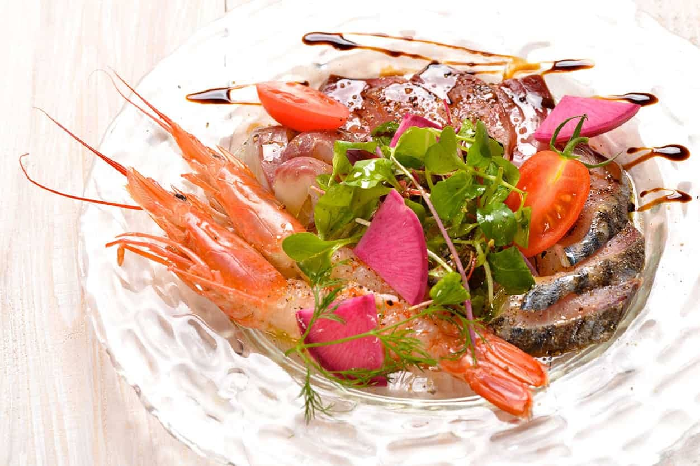

Cuisine
お料理メニュー
フランス・イタリアの技法と九州の旬素材が出会う、
ノムカ+Cafeこだわりのお料理をご紹介します。

Lunch Menu — ランチ
営業時間：11:30〜15:00（L.O. 14:30）
ノムカランチ
¥1,480
ノムカのスタンダードなランチです
- •田舎風パテと5種の前菜＆生ハムがのった朝採れ野菜プレート
- •本日の野菜スープとライ麦のバケット
- •メイン（日替わり生パスタ / グラタンブレット / 焼き野菜カレー から選択）
- •クラフトアイスの自家製クッキーサンド
- •ドリンク
ご褒美ランチ 一番人気
¥2,000
一番人気のランチです。メイン料理はお肉かお魚、今日の気分で。
- •田舎風パテ
- •魚介と野菜の前菜6種盛り＆サラダプレート
- •本日の野菜スープとライ麦のバケット
- •メイン（本日の肉料理 または 本日の魚料理 から選択）
- •クラフトアイスの自家製クッキーサンドと本日のドルチェ盛り合わせ
- •ドリンク
昼から飲める…ランチコース
¥2,500
今日はちょっと贅沢したい…そんな自分への満足ランチコースです♪
- •田舎風パテ
- •魚介と野菜の前菜8種盛り＆サラダプレート
- •本日の野菜スープとライ麦のバケット
- •日替わり生パスタ
- •メイン（本日の肉料理 または 本日の魚料理 から選択）
- •お口直しのクラフトアイス
- •ドリンク
ドレッシング選択
減塩フレンチ / オニオン / シーザー
ドリンク選択
ブラッドオレンジジュース / カルピス / コーヒー（ICE/HOT）/ 紅茶（ICE/HOT）
追加オプション
本日のカルパッチョ
＋¥550
パスタ大盛り
＋¥300
スパークリングワイン（白）
＋¥600
ランプルスコ（赤・微発泡）
＋¥600
ランチ限定 乾杯生ビール
＋¥350
Insalata — サラダ
季節のフルーツと豆・キヌアのサラダ
¥1,080
ローストビーフ＆ポークのデリサラダ
¥1,080
Cold Dishes — 冷菜
田舎風パテの前菜
お一人様／2名様から
¥759
自家製いちじくバターとライ麦バゲット
¥428
明太子マカロニサラダ
¥428
キャロットラペ オレンジ風味
¥428
季節野菜のピクルス
¥538
しらすと季節野菜のフリッタータ
¥538
スモーキーポテトサラダ クリスピーベーコン
¥648
ハニーチーズ豆腐
¥648
自家製パテ ド カンパーニュ
¥968
鮮魚のカルパッチョ
¥1,078
生ハム
50g / 100g
¥748 / ¥1,298
Hot Dishes — 温菜
あさりのワイン蒸しまたはバターソテー
¥968
スパイシーウィング
1本
¥176
イタリアン ミートボール
¥308
ノムカポテト 粗びきマスタードマヨ
¥648
季節野菜とアンチョビのソテー
¥648
イカのフリット シチリアンレモンソース
¥758
チーズミートラザーニャ
¥978
Ajillo — アヒージョ
旬の食材を使った月替わりのアヒージョ。
バゲット ¥308 ライ麦パン ¥418 と合わせてどうぞ。
Main Dish — メイン
カムイ牛のタリアータ
S ¥1,628 / M ¥2,280
薩摩地鶏のレモンバターソテー
¥868
信州アルプスビーフ ロインステーキ トリュフソース
¥1,738
糸島産豚肩ロース 玉ねぎしょうがソース
¥1,408
Pasta & Risotto — パスタ・リゾット
卓上で仕上げる濃厚カルボナーラ
名物
¥1,518
洋食屋さんのナポリタン
¥1,078
バターあおさのパスタ
¥1,298
本日のトマトソースパスタ
¥1,298
ポルチーニ茸のリゾット
¥1,408
ボロネーゼ
¥1,518
Bread — パン
バゲット
¥308
ライ麦パン
¥418
Dessert — デザート
クラフトアイスクリーム
W.Ice Cream Factory
¥528
キャラメル クレームブリュレ
¥528
マスカルポーネのティラミス
¥638
ワインに合うチーズケーキ
¥638
デザート盛り合わせ
¥1,078
※仕入れ・季節により内容や価格が変わる場合があります。
※表示価格はすべて税込です。
お問い合わせ：092-892-1815